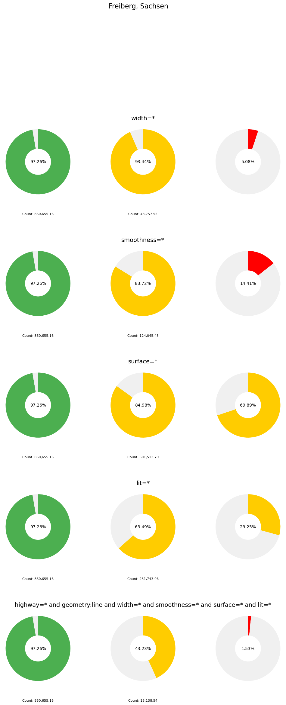
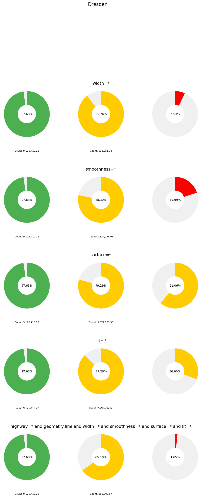
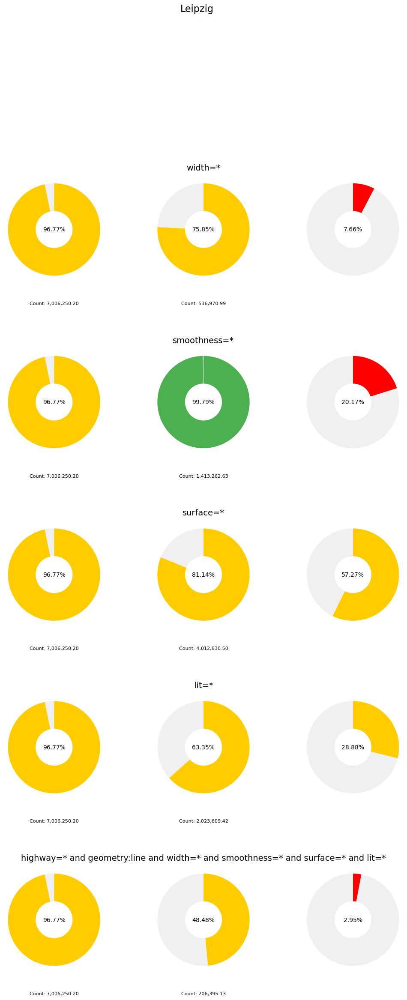

Ohsome API Test#
Quellen: HeiGIT
API Endpoints:
base_url = "https://api.ohsome.org/v1"
endpoint = "/elements/length"
url = base_url + endpoint
base_url = "https://oqt.ohsome.org/api"
endpoint = "/indicators"
indicator = "/mapping-saturation"
url = base_url + endpoint + indicator
def bpolys_from_name(name, which_result):
df = ox.geocoder.geocode_to_gdf(name, which_result=which_result)
north = df.bbox_north[0]
east = df.bbox_east[0]
south = df.bbox_south[0]
west = df.bbox_west[0]
bpolys = {
"type": "Feature",
"properties": {"id": "Region 1"},
"geometry": {
"type": "Polygon",
"coordinates": [
[
[
east, north
],
[
west, north
],
[
west, south
],
[
east, south
],
[
east, north
]
]
]
}
}
return bpolys
def display_oqt_results(feature, name):
label = feature["results"][0]["result"]["label"]
color = feature["results"][0]["result"]["label"]
description = feature["results"][0]["result"]["description"]
svg = feature["results"][0]["result"]["svg"]
# print(json.dumps(result, indent=4))
print(name)
print("-" * len(name))
print("Quality Label: " + colored(label, color))
print("Result Description: " + description)
display(SVG(svg))
def display_ohsome_results(result):
dates = []
values = []
for r in result:
year = datetime.fromisoformat(r["timestamp"].replace("Z", ""))
dates.append(year)
values.append(r["value"])
fig, ax = plt.subplots()
ax.plot(dates, values, label="highway=cycleway")
ax.legend()
fig.suptitle("Temporal Evolution of Cycleways")
plt.show()
def get_ohsome_result(url="https://api.ohsome.org/v1/elements/length", name="Freiberg, Sachsen", filter_string=None):
bbox = ox.geocoder.geocode_to_gdf(name, which_result=0)
north = bbox.bbox_north[0]
east = bbox.bbox_east[0]
south = bbox.bbox_south[0]
west = bbox.bbox_west[0]
parameters = {
"bboxes": "{},{},{},{}".format(west, south, east, north),
"filter": "{}".format(filter_string),
"format": "json",
"time": "2008-01-01/2023-01-01/P1M",
}
headers = {
"accept": "application/json",
"Content-Type": "application/x-www-form-urlencoded",
}
print(parameters)
response = requests.post(url, data=parameters, headers=headers)
response.raise_for_status() # Raise an Exception if HTTP Status Code is not 200
ohsome_result = response.json()["result"]
return ohsome_result
def get_oqt_result(url="https://oqt.ohsome.org/api/indicators/mapping-saturation", bpolys=None, ohsome_result=None, filter_string=None):
topic = {
"key": "mapping-saturation-cycleways",
"name": "Cycleways",
"description": "Number of features taged as {}".format(filter_string),
"data": {"result": ohsome_result}
}
parameters = {
"bpolys": bpolys,
"topic": topic,
"includeSvg": True,
"includeHtml": False,
"flatten": False
}
print(parameters)
headers = {"Content-Type": "application/json",
"Accept": "application/json"}
response = requests.post(url, json=parameters, headers=headers)
response.raise_for_status() # Raise an Exception if HTTP Status Code is not 200
oqt_result = response.json()
return oqt_result
def get_results(name="Freiberg, Sachsen", which_result=0, filter_string=None):
results = {}
bpolys = bpolys_from_name(name=name, which_result=which_result)
ohsome_result = get_ohsome_result(name=name, filter_string=filter_string)
results["highest_count"] = ohsome_result[-1]["value"]
# display_ohsome_results(ohsome_result)
oqt_result = get_oqt_result(
bpolys=bpolys, ohsome_result=ohsome_result, filter_string=filter_string)
results["quality_label"] = oqt_result["results"][0]["result"]["label"]
results["quality_description"] = oqt_result["results"][0]["result"]["description"]
results["quality_value"] = oqt_result["results"][0]["result"]["value"]
# display_oqt_results(oqt_result, name=name)
return results
{ city : { highway_type: { result_no_tag : result “tag”: { result_tag : result percentage: result } } }
# filter_string = "(highway=cycleway or cycleway:both=* or cycleway:left=* or cycleway:right=*) and geometry:line"
# get_results(name="Freiberg, Sachsen", which_result=0)
def get_city_results(city="Freiberg, Sachsen", primary_filter="highway=*", secondary_filters=None):
filter_base_line = "{0} and geometry:line".format(primary_filter)
results_base_line = get_results(name=city, filter_string=filter_base_line)
tags_dict = {}
tag_dict = {}
filter_all = "{0} and geometry:line".format(primary_filter)
for secondary_filter in secondary_filters:
filter_with_tag = "{0} and {1} and geometry:line".format(
primary_filter, secondary_filter)
result_with_tag = get_results(name=city, filter_string=filter_with_tag)
print("base: {}".format(results_base_line))
print("filtered: {}".format(result_with_tag))
percentage_with_tag = (result_with_tag.get("highest_count", 0) /
results_base_line.get("highest_count", 1)) * 100
tag_dict[secondary_filter] = {
"results_with_tag": result_with_tag,
"percentage_with_tag": percentage_with_tag
}
filter_all += " and {0}".format(secondary_filter)
result_with_all_tag = get_results(name=city, filter_string=filter_all)
percentage_with_all_tag = (result_with_all_tag.get("highest_count", 0) /
results_base_line.get("highest_count", 1)) * 100
tag_dict[filter_all] = {
"results_with_tag": result_with_all_tag,
"percentage_with_tag": percentage_with_all_tag
}
tag_dict["results_no_tag"] = results_base_line
tags_dict[primary_filter] = tag_dict
return tags_dict
# print("% Ways with {} tag {}".format(secondary_filter, coverage))
# filter_string = "highway=* and width=* and geometry:line"
# result_with_width = get_results(name="Freiberg, Sachsen", which_result=0,
# filter_string=filter_string)
# IDEA: What percentage of Ways has all relevant tags?
def get_city(city="Freiberg, Sachsen", primary_filter="highway=*", secondary_filters=["width=*", "smoothness=*", "surface=*", "lit=*"], force=False):
city_file = Path("cache", "ohsome_results" + city + ".json")
if city_file.exists() and not force:
result_city = dict(
json.load(open(city_file)))
else:
result_city = get_city_results(city, primary_filter, secondary_filters)
json.dump(result_city, open(city_file, 'w'))
return result_city
def plot_donut(ax, percentage, secondary_text, highest_count=None, radius=0.25, width=0.15):
# Determine the color based on the percentage
if percentage < 25:
colors = ['#ff0000', '#f0f0f0'] # red
elif percentage <= 97:
colors = ['#ffcc00', '#f0f0f0'] # yellow
else:
colors = ['#4caf50', '#f0f0f0'] # green
# Values for the pie chart (donut)
values = [percentage, 100 - percentage]
# Plot the pie chart
wedges, _ = ax.pie(values, colors=colors, startangle=90,
counterclock=False, radius=radius, wedgeprops={'width': width})
# Equal aspect ratio ensures that pie is drawn as a circle
ax.axis('equal')
# Add the secondary text
ax.text(0, 0, f'{secondary_text}', ha='center', va='center', fontsize=10)
# Add the highest_count text if provided
if highest_count is not None:
ax.text(0, -0.4, f'Count: {highest_count:,.2f}',
ha='center', va='center', fontsize=8)
def plot_city(city="Freiberg, Sachsen", ohsome_results=None):
rows_data = ohsome_results[city]["highway=*"]
# Create a figure and axes to plot the donut charts with any number of rows
fig, axes = plt.subplots(len(rows_data) - 1, 3,
figsize=(12, len(rows_data) * 4))
plt.subplots_adjust(wspace=0.5, hspace=0.7)
# Adjusting the main title position
plt.suptitle(city, fontsize=16, y=1.05)
# Iterate through the data and plot the donut charts for each row
for i, (key, values) in enumerate(rows_data.items()):
if key == 'results_no_tag':
continue
# Extract values for plotting
results_no_tag = ohsome_results[city]["highway=*"]['results_no_tag']
results_with_tag = values['results_with_tag']
percentage_with_tag = values['percentage_with_tag']
# Plot the donut charts
plot_donut(axes[i][0], results_no_tag['quality_value'] * 100,
f"{results_no_tag['quality_value'] * 100:.2f}%", highest_count=results_no_tag['highest_count'])
plot_donut(axes[i][1], results_with_tag['quality_value'] * 100,
f"{results_with_tag['quality_value'] * 100:.2f}%", highest_count=results_with_tag['highest_count'])
plot_donut(axes[i][2], percentage_with_tag,
f"{percentage_with_tag:.2f}%")
# Adding the titles for the rows
# Adjusting the position
axes[i][1].set_title(key, fontsize=14, y=1.05)
plt.show()
Ergebnisse#
Zu sehen sind:
Spalte die Sättigung des primary_filters. In diesem Fall “highway=* and geometry:line”. Das umfasst alle Straßen die in OSM eingetragen sind.
Spalte ist die Sättigung inklusive des secondary_filters jeweils durch die Überschrift der Zeile angezeigt. z.B.(width=* würde als Filter haben “highway=* and geometry:line and width=*”)
Spalte ist das Prozentualle Verhältniss zwischen der maximalen Anzahl von Objekten ohne secondary_filter zu der Anzahl der Objekte mit secondary_filter. Das heißt wie viel Prozent der Straßen dieses Attribut besitzen.
Interpretation#
Ist eine Sättigung noch nicht erreicht, so sind Freiwillige noch dabei dieses Tag zu vervollständigen. Es ist dann nicht plausibel eine Aussage über die Daten zu treffen, da klar ist, dass sie noch nicht vollständig sind. Ist die Sättigung erreicht, so ist es unwahrscheinlich, dass sich noch jemand die Mühe macht dieses Tag zu vervollständigen.
Note
Nur weil die Sättigung hoch ist bedeutet das nicht, dass alle Attribute/Straßen vollständig eingetragen sind. Es heißt nur, das keine neuen mehr eingetragen werden. Das kann verschiedene Gründe haben. Zum Beispiel, kann es sein, dass Leute sich den Aufwand nicht machen wollen, oder es gibt keine Datenquellen für das Attribut.
Ist die erste Spalte gesättigt und die zweite nicht, wird sich das Verhältniss in der dritten Spalte noch verbessern.
Sind Spalte eins und Spalte zwei gesättigt, so wird sich das Verhältniss in der dritten Spalte nicht mehr verbessern. Das bedeutet, es wird bei der angegebenen Abdeckung bleiben. Als Beispiel Freiberg alle Straßen mit Breite: 97.26%, 93,44% und 5,08%. Sättigung der Straßen ist erreicht, es kann also eine Aussage getroffen werden. Sättigung des “width” ist zwar noch nicht Erreicht aber schon relativ hoch. Es ist also davon auszugehen, dass sich das Verhältniss nicht mehr groß ändern wird. Das Verhältniss ist 5,08% der Straßen haben eine eingetragende Breite. Das ist sehr wenig und eignet sich nicht für eine Bewertung R4R.
ohsome_results = {}
city = "Freiberg, Sachsen"
ohsome_results[city] = get_city(city)
plot_city(city, ohsome_results)

city = "Dresden"
ohsome_results[city] = get_city(city)
plot_city(city, ohsome_results)

city = "Leipzig"
ohsome_results[city] = get_city(city)
plot_city(city, ohsome_results)
